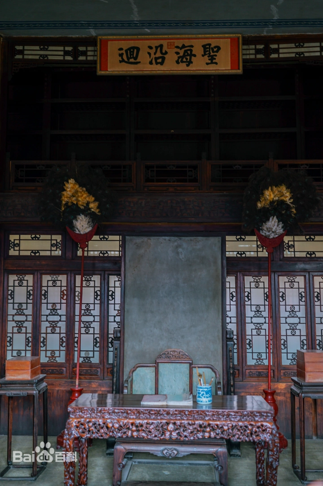
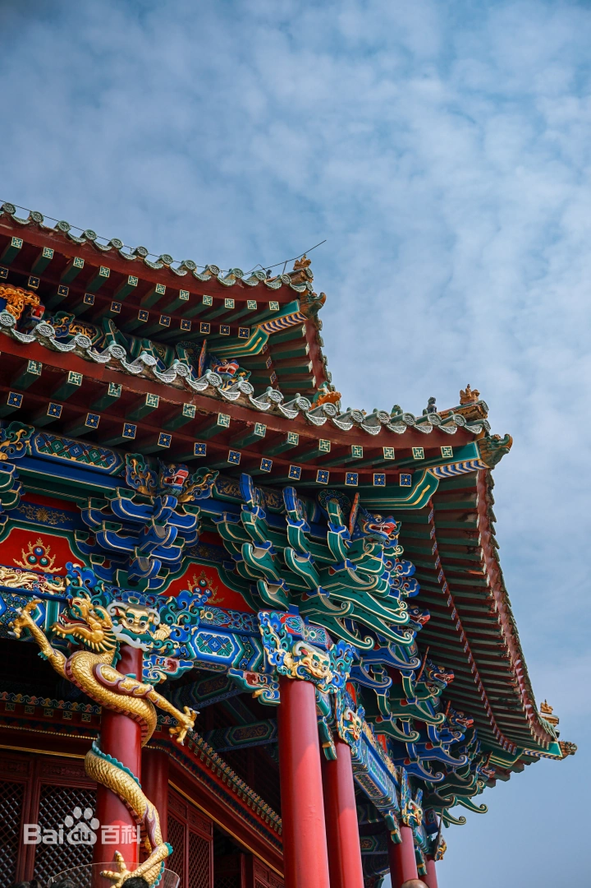
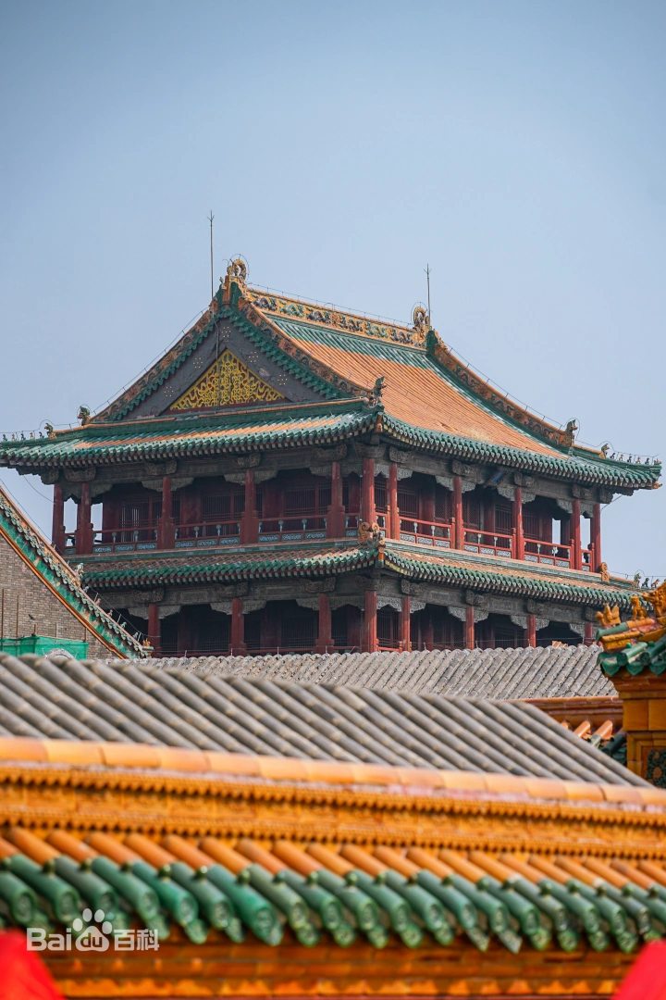
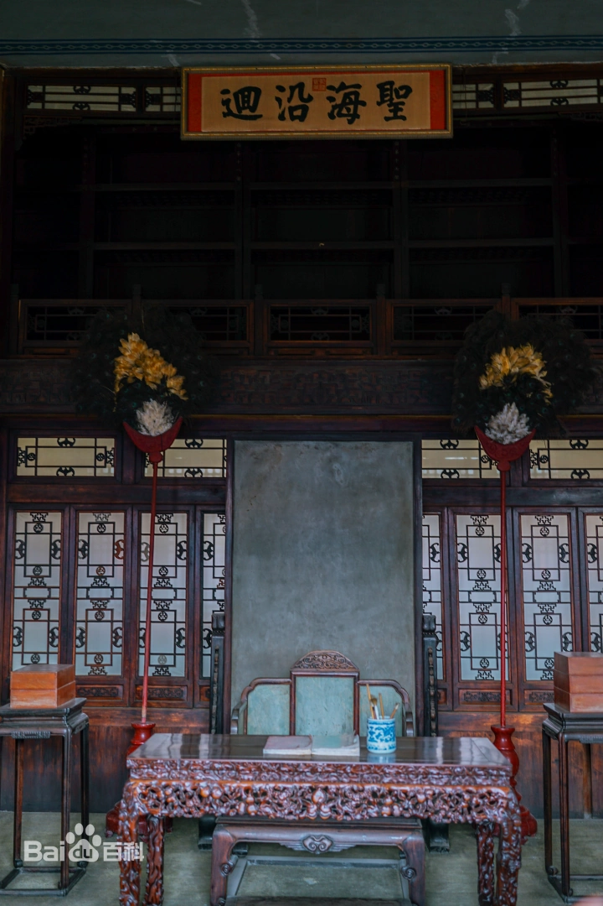
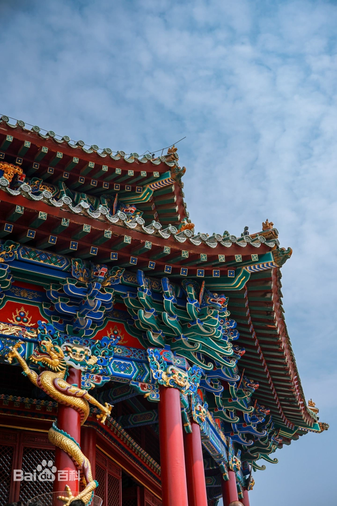
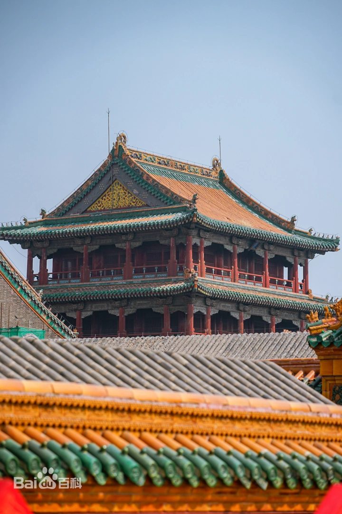

沈阳故宫
 





历史沿革
沈阳故宫，又称盛京皇宫，位于辽宁省沈阳市沈河区，为清朝初期的皇宫。沈阳故宫始建于清太祖天命十年（1625年），建成于清崇德元年（1636年）。 总占地面积63272平方米，建筑面积18968平方米。它不仅是中国仅存的两大皇家宫殿建筑群之一，也是中国关外唯一的一座皇家建筑群。 清朝迁都北京后，故宫被称作“陪都宫殿”“留都宫殿”。后来就称之为沈阳故宫。共经历努尔哈赤、皇太极、乾隆三个建造时期，历时158年。 建筑100余座、500余间。入关以后，康熙、乾隆、嘉庆、道光，相继十次“东巡”时作为驻跸所在。
建筑成就
沈阳故宫按照建筑布局和建造先后，可以分为3个部分：东路、中路和西路。东路包括努尔哈赤时期建造的大政殿与十王亭，是皇帝举行大典和八旗大臣办公的地方。中路为清太宗时期续建，是皇帝进行政治活动和后妃居住的场所。西路则是清朝皇帝“东巡”盛京时，读书看戏和存放《四库全书》的场所。在建筑艺术上承袭了中国古代建筑传统，集汉、满、蒙族建筑艺术为一体，具有很高的历史和艺术价值。
核心特色
1961年3月4日，沈阳故宫被中华人民共和国国务院公布为第一批全国重点文物保护单位。 2004年7月1日，在中国苏州召开的第28届世界遗产委员会会议批准沈阳故宫作为明清皇宫文化遗产扩展项目列入《世界遗产名录》。